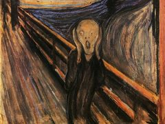

This iconic oil painting by **Vincent van Gogh** depicts the view from the east-facing window
of his asylum room at Saint-Rémy-de-Provence, just before sunrise, with the addition of an
imaginary village. It's often considered Van Gogh's *magnum opus*.
One of the most recognized is his Self-Portrait with a Beret (1886), where his face is captured with the characteristic loose, vibrant brushwork of Impressionism.
s a central figure in Impressionism, his main focus was on landscape and light, making his introspective self potrait a rare and fascinating glimpse of the artist himself.
during the Renaissance. The subject's controversial enigmatic
smile continues to fascinate viewers centuries later.
Painted in late 1903 during his Blue Period, the canvas is dominated by shades of blue and depicts a hunched, haggard, and presumably blind elderly man clutching his guitar. The work powerfully conveys themes of human misery, poverty, and isolation, with the guitar's warm brown color offering the only counterpoint to the despairing blue, suggesting that art is his only solace and dignity.
His self-portraits are characterized by intense color and bold, visible brushstrokes, offering an unvarnished view into his fluctuating mental and emotional states.
These paintings were essential to his practice, allowing him to save money on models and intensely explore his own identity and suffering.
Steps to Appreciate Impressionism
Stand back to view the overall composition.
Observe the artist's use of clear lines *broken color* and light.
Reflect on the emotional response the colors evoke.

*The Scream* is a work from **Edvard Munch's** series, *The Frieze of Life*.
The androgynous figure, a symbol of modern anxiety, is a powerful expression of existential
angst. Munch recorded in his diary that he was walking at sunset when he "felt a great
scream pass through nature."
Artwork Comparison Summary
Key Details of the Featured Artworks
Artwork Title
Artist
Year
Medium
The Starry Night
Vincent van Gogh
1889
Oil on Canvas
Claude Monet portrait
Leonardo da Vinci
c. 1503–1506
Oil on Poplar Panel
The Old guitarist
Salvador Dalí
1931
Oil on Canvas
Vincent van gog
Claude Monet
Series (c. 1899–1926)
Oil on Canvas
The Scream
Edvard Munch
1893
Pastel / Tempera / Oil
All listed works are globally recognized masterpieces.